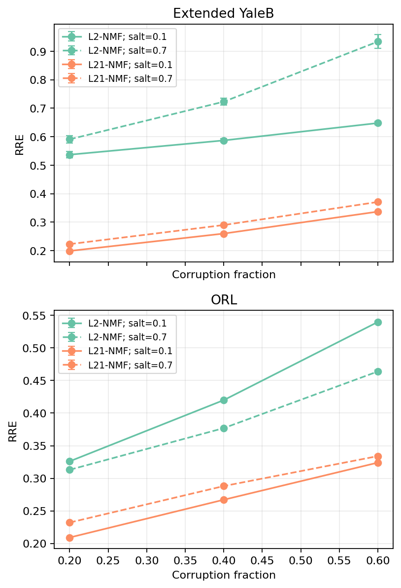
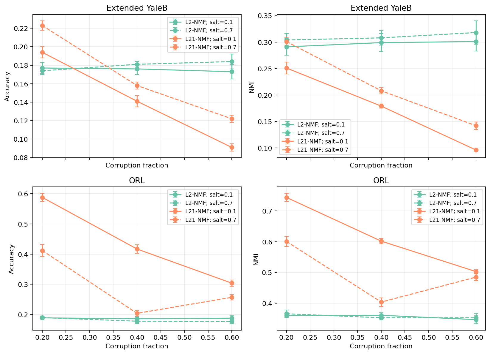

BASELINE
L2-NMF
Minimizes squared reconstruction error. It is direct and interpretable, but isolated extreme pixels receive disproportionate influence.
min ||X − WH||²F
AI / ML · FACE RECONSTRUCTION
A documented comparison of standard L2-NMF and an L2,1-oriented robust factorization under salt-and-pepper corruption—built from a completed four-person team experiment.
The problem
Face images can be arranged as a nonnegative matrix: pixels by samples. NMF seeks a compact basis W and coefficients H whose product reconstructs that matrix. Salt-and-pepper corruption inserts sparse, high-contrast errors that can dominate a squared-error objective.
Method contrast
BASELINE
Minimizes squared reconstruction error. It is direct and interpretable, but isolated extreme pixels receive disproportionate influence.
min ||X − WH||²F
ROBUST ORIENTATION
Uses an explicit column-sparse residual to reduce the leverage of corrupted samples. The current solver is L2,1-oriented; equivalence to every formulation carrying that name is not claimed.
X ≈ WH + E
Recorded evidence
Values below are three-decimal aggregates of historical experiment means, averaged across six stored corruption and salt-ratio settings for each dataset and method. They were not reproduced by the current refactor or smoke test.
| Dataset | Method | RRE ↓ | Accuracy ↑ | NMI ↑ |
|---|---|---|---|---|
| ORL | L2-NMF | 0.407 | 0.185 | 0.357 |
| ORL | L21-NMF | 0.276 | 0.364 | 0.557 |
| Extended YaleB | L2-NMF | 0.670 | 0.178 | 0.304 |
| Extended YaleB | L21-NMF | 0.280 | 0.155 | 0.196 |


Reproducibility
The smoke experiment uses a deterministic synthetic matrix to check finite RRE and nonnegative factors. It is not a benchmark and does not recreate the archived face-data experiment.
$ python -m venv .venv
$ python -m pip install -e ".[dev,report]"
$ python -m pytest
$ python scripts/smoke_experiment.py
$ python scripts/generate_result_figures.pyLimits
Face datasets are not distributed here; full experiments require independently obtained and verified data.
Stored values retain only three-decimal historical precision, without run-level observations.
Global convergence is not claimed for the current robust residual solver.
Clustering depends on representation quality, initialization, and evaluation protocol.
Collaboration
The robust L2,1-oriented implementation and the project as a whole are team outcomes. Neither is presented as solely my work.
DOCUMENTED PERSONAL CONTRIBUTIONS
READ THE RECORD